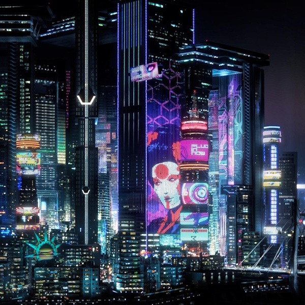
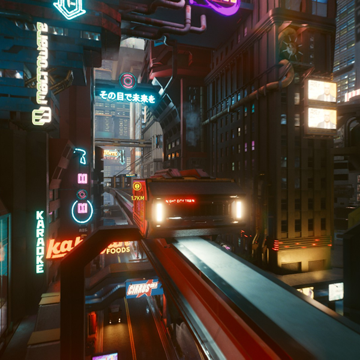
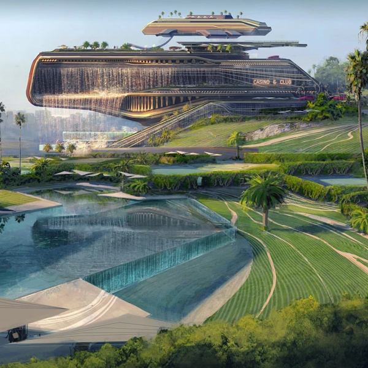

Végtelen lehetőség
Night City otthont ad a világ legnagyobb vállalatainak, köztük az Arasaka-nak és a Militech-nek is. Építsen karriert, valósítja meg álmait és éljen teljes életet!

Modern közlekedés
Városunkat percek alatt bejárhatja a fejlett metró hálózatnak és számos autópályának köszönhetően, és bejárhatja az egész világot saját repülőterünk által.

Fényűző élet
Kezdje újra az életét, éljen luxusban és felejtse el minden gondját. Ismerjen meg új embereket és nyisson ajtót az új lehetőségek előtt. Night City csak önre vár!